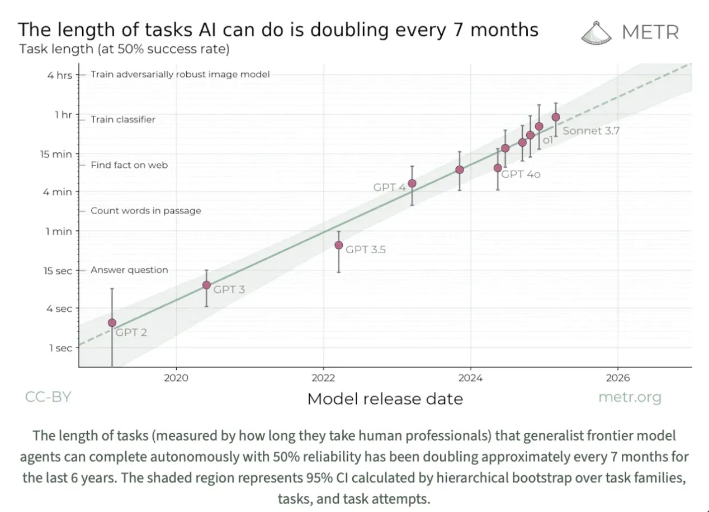

Young People Can't Get Jobs. Now What?
Don’t wait for a job, create one: Indie Studios, Fast Builds, and Scaling Artisans

Welcome. I’ve become fixated on the coming crisis of youth unemployment. I think you should care. DM me or email lawrence@lunar.vc. share with anyone you think will care. Cheers.
Look, the jobs are already gone. This isn't a future problem, it's a today problem. Life comes at you fast, but here we are. 70% of hiring managers say AI can already replace an intern. 78% plan to cut or eliminate graduate hiring altogether….
Entry-level roles across the economy are going away, fast. Junior lawyers, accountants, bankers, data analysts. Any task that is digital, routine, and legible to AI will go, and soon. Youth unemployment is going to spike, and unless we do something urgently we will have lost a generation of talent and millions of disillusioned young people with no stake in society.
1. The agents are already here, lads
AI agents are improving at an astonishing pace. Just nine months ago, the best systems could only complete about 1 in 5 computer-based tasks from start to finish. Today, GPT-4o gets through nearly 4 in 10. On tasks that involve navigating the internet, like booking tickets or researching a product, it now succeeds more than half the time, up from just over a third. Reliability continues to improve. Remember folks these systems are the worst they will ever be. Claude 3.7 performs nearly twice as well as its predecessor on both programming tasks and simulated customer service work.
And it’s not just one benchmark, across the board, agents are getting better on longer and more complex workflows. The length of tasks AI agents can complete reliably has been doubling every 7 months, from a dozen steps with GPT-3.5 to over 50 steps today with GPT-4o. This isn’t a one-off jump. There is a chart and the line keeps going up.
Look at the chart. The way things are going, if it takes you 4 hours to do a thing digitally, in just over 12 months, we should expect an agent to be able to do it too. And for a fraction of the cost. Maybe the improvements just stop? I guess so, but why? I don’t see any good reasons as to why it would. Happy to hear thoughts in the comments.

The better agents get, the more tasks they can complete. See my fancy graphic below:

It may take longer to reach the higher value tasks. Some may argue, never. And that’s fine. That doesn’t change the fact that the lower-value tasks will go. The business case for automating junior roles has become overwhelming, and adoption is accelerating way faster than our social systems can adapt.
2. Young people are getting hit first, especially grads
AI isn’t replacing factory workers or cashiers. It’s coming for junior white-collar roles, analysts, associates, assistants, interns, recent grads. The very jobs our education system trains people for. And our safety nets, retraining programs, and policy instincts are still geared toward protecting non-graduates and low-wage workers. That’s not where the collapse is happening.
So while unemployment looks stable on the surface—4.2% in the US, 4.5% in the UK, 6.2% in the EU—the picture for young people is very different. Youth unemployment is 13.4% in the UK, 14.5% across the EU, and 10.6% in the US for 16–24 year olds. These are the highest levels since the pandemic and rising. And for grads, the signals are even worse.
And we have some bad signals:
UK tech companies cut graduate hiring by 27.8% in 2023.
Accounting and professional services dropped graduate intake by 13.4%
Overall graduate job openings fell by 6.4% in 2023
Internship postings in the UK dropped 30% between 2022 and 2024
And employers are saying the quiet part out loud: 70% say AI can already replace an intern. 78% plan to cut or eliminate graduate hiring altogether because of it.
Each year, roughly 2.4 million students graduate with a bachelor’s degree in the US, 500,000 in the UK, and 3.3 million across the EU. They’re entering a workforce where the traditional stepping stones, internships, analyst programs, training schemes, are rapidly disappearing. For many, the first rung on the career ladder has simply vanished.
Derek Thompson just wrote in The Atlantic highlighting some concerning data:
“Consider, then, a novel economic indicator: the recent-grad gap. It’s the difference between the unemployment of young college graduates and the overall labor force. Going back four decades, young college graduates almost always have a lower—sometimes much lower—unemployment rate than the overall economy, because they are relatively cheap labor and have just spent four years marinating in a (theoretically) enriching environment.”

Historically, overall unemployment was higher than graduate unemployment. Around 2015, something unprecedented happened: the gap flipped negative and has plunged to record lows in 2025. This means new graduates now have much higher unemployment than the general population - completely opposite to historical patterns.
This trend cannot be explained entirely by AI, lingering COVID effects, higher mental health problems, and degrees being worth less are noted as causes. But for sure AI will make the problem worse.
AI has already caused a rise of graduate unemployment. And think about it, it lags model progress by at least 12 months. Employers saw GPT-4 and pulled back on graduate schemes and intern hiring. And now we have o3, Gemini 3.5 and 3.7 Sonnet. And in less than 12 months we will have models that can reliably complete tasks that take 1hr+ today.
This is very different from 2008. Back then, job postings dropped across all levels because the whole economy crashed. When growth came back, entry-level jobs returned too. Today, the overall job market is healthy, but entry-level positions are vanishing.
Do we think these jobs are coming back? The answer is no. No, they are not coming back.
3. We’re not ready for what’s coming
Most universities are still training students for jobs that no longer exist. Fewer than one in four business schools have meaningfully updated their curricula to include AI, and just 14% of companies have a formal plan to train workers in AI tools. Meanwhile, nearly 70% of graduates say they wish they’d learned how to work with AI before entering the workforce. This isn’t just a gap. It’s a chasm between education and economic reality.
And when students do graduate, as we’ve mentioned, the traditional white-collar entry ramps are gone. Analyst and associate roles, once rites of passage, are now increasingly automated. These were the foundational paths into law, consulting, media, finance. They’re not being restructured. They’re being erased.
The systems we’ve built to protect workers aren’t designed for this kind of collapse. You can’t protect jobs that are never posted. You can’t retrain people who never got trained in the first place. Trade unions, reskilling programs, and lifelong learning initiatives still assume a world where entry-level employment exists. That assumption no longer holds for millions of young, educated workers.
Even the best private sector experiments: AI apprenticeships, micro-internships, bootcamps are operating at boutique scale. They help hundreds or thousands, but we now need solutions that reach millions. If we keep tinkering at the margins, we’ll sleepwalk into a generational crisis; if we haven’t already.
We are not dealing with a short-term mismatch. It’s a structural breakdown in how young people enter the workforce. We cannot fix it with tweaks to curriculum or another round of CSR-backed pilots. We need to build a new model, one that assumes the old ladders are gone, and starts designing what replaces them. Fast.
4. Don’t wait for a job, create one
So what to do? We will have to tackle the education system, but that will take too long. Right now we need to help young people into meaningful work.
I see a spectrum of new solutions focused on building agency.
Project: Indie Studio
Concept: A new type of bootcamp/incubator, specifically targeting young people who wanted to be lawyers, accountants, bankers, or other high status jobs. Start with final year students and recent graduates. Continue to push some students to EF or another VC-oriented pathway, that’s still viable for a very small proportion of graduates. But that’s just one pathway.
This incubator would help each participant launches three consecutive revenue-generating micro-businesses within 18 months, creating anti-fragile income portfolios across digital products, services, and tools. The watch word here is vibe-coding.
Why it matters: Traditional employment paths are vanishing, but the vibe coding, @levelsio/indie hacker model proves recent graduates can build sustainable income without the corporate ladder. By focusing on multiple small cashflows rather than a single job, participants create resilience against further AI disruption. The model differs from traditional incubators by focusing on cashflow rather than exits and creating a portfolio effect within each individual participant.
Funding structure: £3.5M would launch the first 175-person cohort:
Initial capital from foundation grants (50%), corporate innovation funds (30%), and impact investors (20%)
Revenue-sharing agreements: 0% until participants earn living wage; 3-5% of revenue above threshold for 3-5 years; one-time "success fee" of 5-7% on exits over £1M?
Returns recycled to fund future cohorts, creating a self-sustaining engine with 1.2x return in first 5 years
Full £10M would enable expansion to 500 participants across three major cities
Project: Fast Builds
Concept: Now, what about young people who don’t want to build an indie online business. They want to build a real local business? With bricks and electrics. Fast Builds would offer rapid-deployment grants of £20K to young entrepreneurs with implementable ideas addressing local problems in physical sectors resistant to AI disruption. A streamlined two-page application and 10-minute video review process enables quick capital deployment with minimal bureaucracy. Participants receive upfront cash for equipment, licenses, and essential startup costs.
Why it matters: Many graduates want to build real-world businesses in their communities but lack startup capital for tools, licenses, and equipment. This model addresses the "green economy skills gap" by funding ventures in sustainable construction, electrical work, care services, and local food production – areas with persistent labor shortages that AI cannot easily disrupt.
Funding structure: £3M would fund the first 150 ventures:
Stage 0: Non-dilutive capital of £20K for tools, licenses, and insurance
Trigger 1: When owner earnings exceed £60,000 or reach 10% profit margin, founders share 5% of revenue until they've paid back 3× the initial amount
Trigger 2: If they raise external funding or reach £1M yearly revenue, outstanding balance converts to 2-3% equity
Returns create a self-sustaining cycle: grants = revenue-share = new grants = equity upside
Full £10M would enable support for 500 ventures in targeted high-demand sectors
Project: Scaling Artisans
Concept: Accelerated apprenticeship program for high-demand trades and care professions that flips the traditional model: AI-powered personalised learning during evenings, with days spent entirely on-site gaining hands-on experience through 90-day rotations with local practitioners. Interesting opportuntity to partner with startup AI learning and development providers here, too.
Why it matters: The biggest challenge is status – graduates told they'd be lawyers now being told to be plumbers. But these hands-on professions are precisely what AI cannot replace today. By creating a high-status pathway into trades (like Teach First did for teaching), we can rapidly fill critical skills gaps while providing stable, well-paying careers for young people locked out of traditional knowledge work.
Funding structure: £3.5M would support an initial cohort of 350 participants:
Pilot program leveraging existing apprenticeship levy funds with minimal new capital required
Employers pay reduced wages (60-70% of normal entry-level) during 90-day rotations
Completion bonuses of £3,000 for finishing three consecutive rotations
Starter tool grants of £800-1,500 for high performers
Low-interest equipment loans up to £5,000, with 50% forgiveness after 3 years of operation
Full £10M would enable expansion to 1,000 participants with comprehensive support services
5. We have to do something, fast
The jobs are gone and they aren’t coming back. More will go and that needs an economy-wide adaptation strategy. Young people are getting hit first.
Indie Studio, Fast Builds, and Scaling Artisans aren't perfect solutions, but they represent something critical: a rethinking of the social contract we've offered young people. For decades, we've promised that education leads to meaningful careers. Keep your head down. Work hard. Do all the extracurriculars. Get a good job. Buy a big house. Be unhappy like everyone else. Etc. That promise is breaking down rapidly, and we can't afford to wait for traditional institutions to catch up.
The stakes are extraordinarily high. Look at countries with persistent youth unemployment above 35% – they experience higher crime rates, political instability, and mental health crises. It's not just an economic problem; it's a social time bomb. A generation without a stake in society becomes increasingly disconnected from its institutions and norms. We certainly have far-right political parties prepared to make hay with youth dispear and anger.
What I’m proposing requires modest investment but a profound cultural shift. We must elevate entrepreneurship beyond tech unicorns and restore prestige to skilled trades. The first rung of the ladder is disappearing, and we need to build a new one. Not in five years. Not next year. Now.